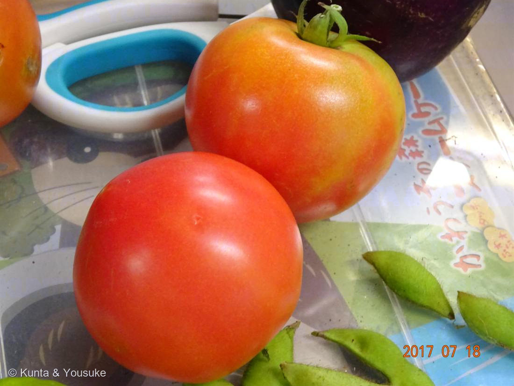
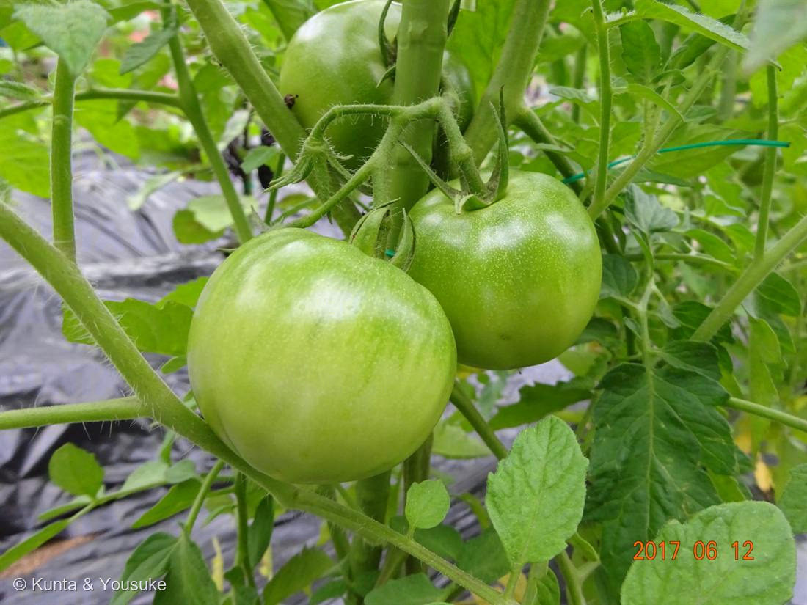

地図を読み込んでいるよ…
🔍 写真も地図も、押しているあいだ拡大して見られるよ（スマホは指を置いてすこし待ってね）。
🌍 の地図＝この子がもともと自生している場所を緑に。南米アンデス（栽培化はメキシコ）。
この地図は野生のトマトのふるさと。畑のトマトになったのはメキシコで、そこは塗っていないよ。──001 トマトと同じ場所だね。
⚠ 地図は国（日本と中国だけ県・省）までしか塗れないから、ほんとうの分布より広く見えていることがあるよ。地図はだいたいの場所。正確なところは、上の文を見てね。
トマト（研究室の畑の完熟トマト）
Solanum lycopersicum L.
別名 · 蕃茄／赤茄子 ／ 品種不明
ナス科 · Solanaceae（ナス属）── 001 トマトと同じ種の“もう一つの顔”
思い出 · 約9年前研究室のレクリエーションの畑で、みんなで育てて食べたトマト001が約束した「おっきくておいしいトマト」
⭐ 001 の約束が、9年ぶりに叶った
- 001 トマト（マイクロトム）のページに、こう書いた：「研究室のマイクロトム。いつか『おっきくておいしいトマト』も並べる約束」。
- ⭐その約束が、昔のデジカメの中から、いま叶った。これは、燻太さんが研究室にいたころ、レクリエーションで作った小さな畑で育てた、大きくて真っ赤なトマト（2017年・約9年前）。001 が「研究のトマト」なら、これは「みんなで育てて食べたトマト」。同じ Solanum lycopersicum の、二つの顔。
研究室の畑の、夏の思い出
- 研究のあいまに、みんなでちっちゃな畑に野菜を植えて、育てて、食べた。写真②（2017-06-12）は、黒マルチのうねでまだ青い実。写真①（2017-07-18）は、真っ赤に完熟した収穫——そばに紫のナスと、緑の枝豆もいて、夏の畑のにぎやかな実りが写ってる。
- 緑（6月）→ 赤（7月）。ひと月で、青い実が真っ赤になった。その色の変化に、じつは面白い科学がある（下）。
⭐ 青から赤へ ── 追熟のしくみ（燻太さんへ）
- ⭐緑（未熟）→赤（完熟）＝クロロフィル（緑）が分解し、リコピン（カロテノイド＝赤い色素）がたまる（064 カキの橙色と同じ、カロテノイドの仲間。アントシアニンではない）。
- ⭐トマトは「クライマクテリック果実」＝収穫したあとも、植物ホルモン「エチレン」で追熟が進む。青いうちに採っても、置いておくと赤くなるのはこのため。
- ⭐果実の成熟は、分子遺伝学の古典的なテーマ。成熟を進める制御因子（RIN＝ripening inhibitor などの MADS-box 転写因子）の変異体は、赤くなりにくく＝日持ちする→長期保存トマトの研究に。⭐そして 001 のマイクロトムは、まさにこの「トマトの成熟や遺伝を調べるモデル植物」。研究のトマトと、畑のトマトが、ここでつながる。
- ⚠青い未熟な実・葉・茎には、トマチン（ナス科のグリコアルカロイド）。⭐完熟した赤い実は安全。青いトマトを生でたくさんは食べない（加熱・漬物は別）。
- トマトにも「種なし（単為結果）」品種がある＝001・055 イチジク・064 種なし柿と同じ「受粉なしで実る」仲間。